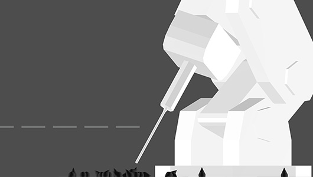
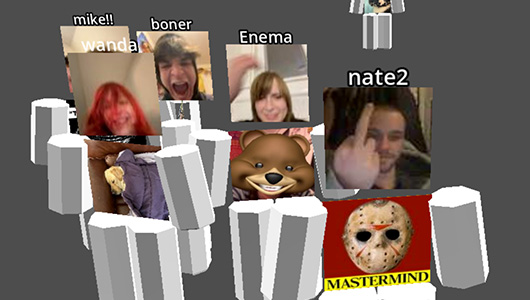
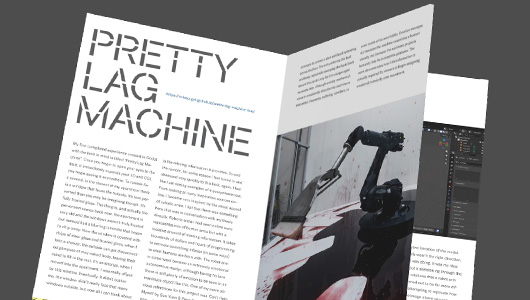

Pretty Lag MachineThe Pretty Lag Machine is a program you can try in your browser (horizontal screen recommended) The sole purpose of the program is to intentionally limit the effectiveness of your hardware. The program pays homage to older, technical and conceptual art pieces like Slow Hot Computer and Can't Help Myself. The Pretty Lag Machine finds its footing and deliberately differentiates itself by being in conversation with the, typically optimized, graphics of early digital experiences.

Dream Chatroom
Dream Chatroom was created out of my love for online chatrooms. I grew up playing a lot of Roblox since 2012, I felt like there was truly an otherworldly feeling to some of those early games. All of the shiny plastic-y textures, low quality textures, vast worlds and infinite skyboxes. I also wanted to recreate, in some stretches, the space of OZ from the movie Summer Wars. I feel like I fell short here recreating my feelings and memories but instead increased with technical capability. Roblox would never let you upload whatever image you wanted as your t-shirt, and certainly not for free. They also would never let users use their webcam, which was a monumental programming feat for me. I have never made anything like this before and I am incredibly happy with how it turned out and people's reactions to it. Dream Chatroom's purpose is to limit your actual ability to chat, instead relying on your t-shirt image and webcam to communicate. Maybe try writing a note on paper and holding it up into the webcam?
UPDATE! May 23. Voice chat added. Your chatting is no longer limited and restricted. Have fun and feel free in this digital world to make new friends. Expect many more updates next month.

Process and interviews
This is my digital process and interview book for my senior thesis titled The Limit. The thesis statement is as follows:
This project explores how the graphical constraint in early digital environments can produce powerful feelings of intensity. Rather than diminishing the experience, reduced visual information can activate imagination, prompting viewers to mentally complete and expand incomplete worlds. Through the design of multiple short experimental interactive environments, this project investigates how limitation, abstraction, and player agency can transform small digital spaces into experiences that feel vast, forceful, and emotionally resonant.
Download PDF
The project stemmed entirely out of my love for 3D graphics that aren't exactly bad looking, but seriously charming. I eventually found the creator World4Jack and his underground online art community he created. With this in mind I ended up conducting 20 interviews (and counting) from a lot of the people in the community as well as more fringe creators. The list of people interviewed are as follows:
World4Jack (Foreword)
CarlosKnowsNot
brwler
Landon Moto
Biibocc
Tokyo Megaplex
Dollo
Ch4ch
Kami.exp
w0rldblog
Decint
MallBat
yadoog
Patch3
w311why
curseweb
Exile
AthSt4r
KavoTavo
Jasper Golding
and Osamu Sato
Hope you enjoy!